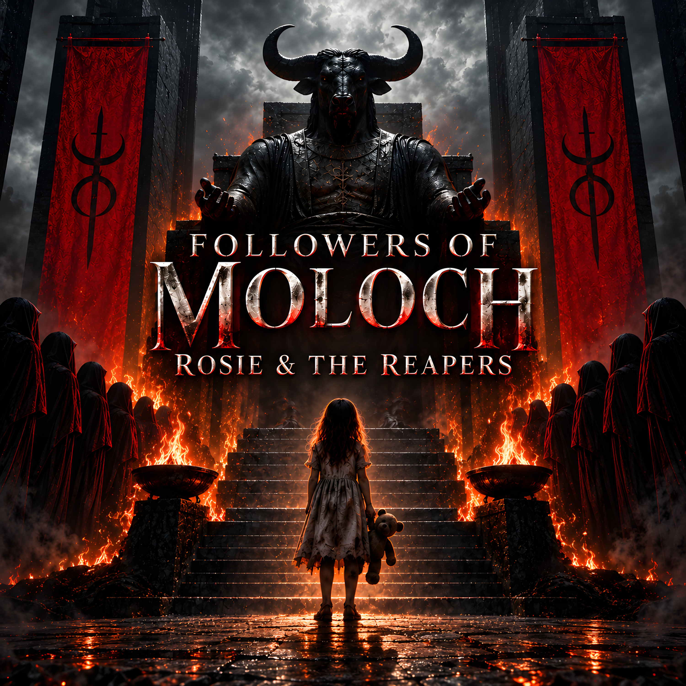

Reaping Culture Through Song
Followers
of Moloch
Say their names.
Remember the children.
LISTEN
Followers of Moloch

Listen to Rosie & The Reapers on your preferred music service.
LYRICS
The Lyrics
Content note: this song addresses the deaths of children and contains strong language of condemnation. The lyrics express the songwriter's perspective, not a court verdict.
Lindsay Clancy killed her kids
She confessed to what she did
She should be held to account
For snuffing three precious lives out
Filicide happens...yes it's true
Now this lens will turn on you
Her supporters
One million reasons to wonder why
You rationalize to the sky
You blame the father... a Gemini...
He called her from the store
She calmly answered
THEN
WENT
TO
THE BASEMENT
One...
Two...
Three...
Now Me...
(Out the Window)
You cannot accept the truth
That Lindsay killed those precious youth
You blame the stars, the meds, the Dad
This is really...truly...sad....
You don't mention the children
Those poor souls, forsaken
Say their names
Cora
Cora
Dawson
Dawson
Callan
Led to the basement
One By One
Lives snuffed out like candle flames
You are really, really sick
Followers of Moloch
BEHIND THE SONG
The Argument Behind the Music
Followers of Moloch is a song about the deaths of Cora, Dawson and Callan Clancy and the songwriter's reaction to the public discussion that followed.
The lyrics challenge what the songwriter sees as a tendency to center explanations for the mother's conduct at the expense of remembering her children. The repeated call to say their names is the emotional center of the song.
Understanding mental illness and evaluating criminal responsibility are distinct from remembering the victims. The song's criticism of perceived rationalization is artistic opinion, not a claim that everyone who expresses sympathy endorses violence or that medical explanations are inherently invalid.
The title invokes a biblical symbol of child sacrifice. It is metaphorical, not an allegation of ritual activity by the family or members of the public.
CASE & BIBLICAL CONTEXT
References & Context
Remembering Cora, Dawson and Callan
The three children died following a tragedy in Duxbury, Massachusetts, in January 2023. They were five years old, three years old and eight months old, respectively.
The Criminal Case
Lindsay Clancy was indicted in September 2023 and pleaded not guilty. Her defense did not dispute that she caused the children's deaths, but contested her criminal responsibility on mental-health grounds. The first trial ended without a verdict in September 2026.
Case status as of November 27, 2026: A judge denied a motion to dismiss the murder case on November 9. A retrial was subsequently scheduled to begin March 29, 2027, while an appeal remains pending. Clancy is presumed innocent unless proven guilty.
Why Moloch?
In the biblical tradition, Molech (also spelled Moloch) is associated with prohibited offerings of children. Leviticus 18:21 and 20:2–5 condemn the practice. The song draws on that imagery as a moral metaphor for losing sight of innocent lives.
SOURCES
Research & Documentation
Official Case Records
Plymouth County District Attorney's Office — September 2023 indictment announcement.
Read the indictment announcement →
Read the February 2023 arraignment announcement →
Case Status
Associated Press, November 9, 2026 — ruling on the motion to dismiss.
NBC Boston, November 16 and 19, 2026 — retrial scheduling and appeal.
Read the retrial scheduling report →